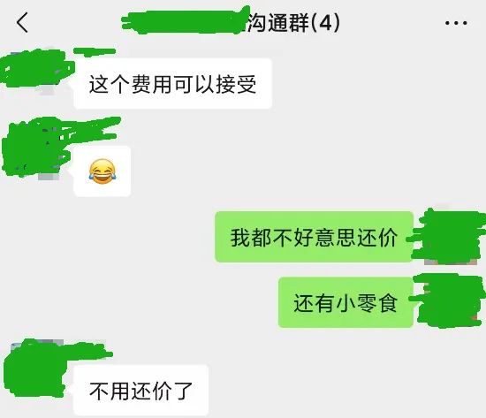
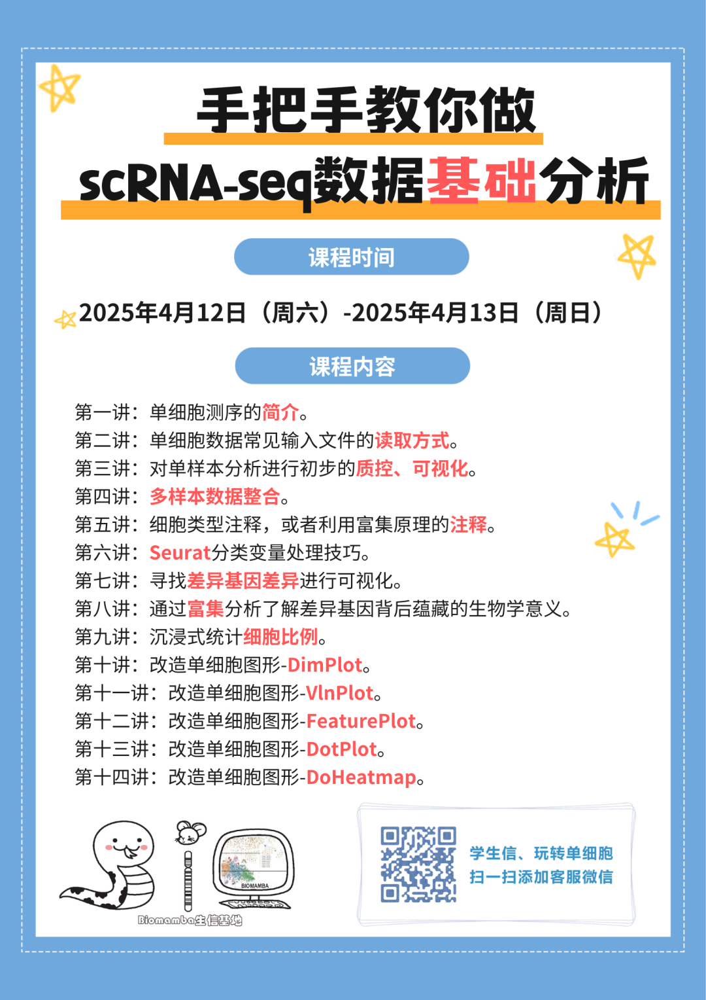
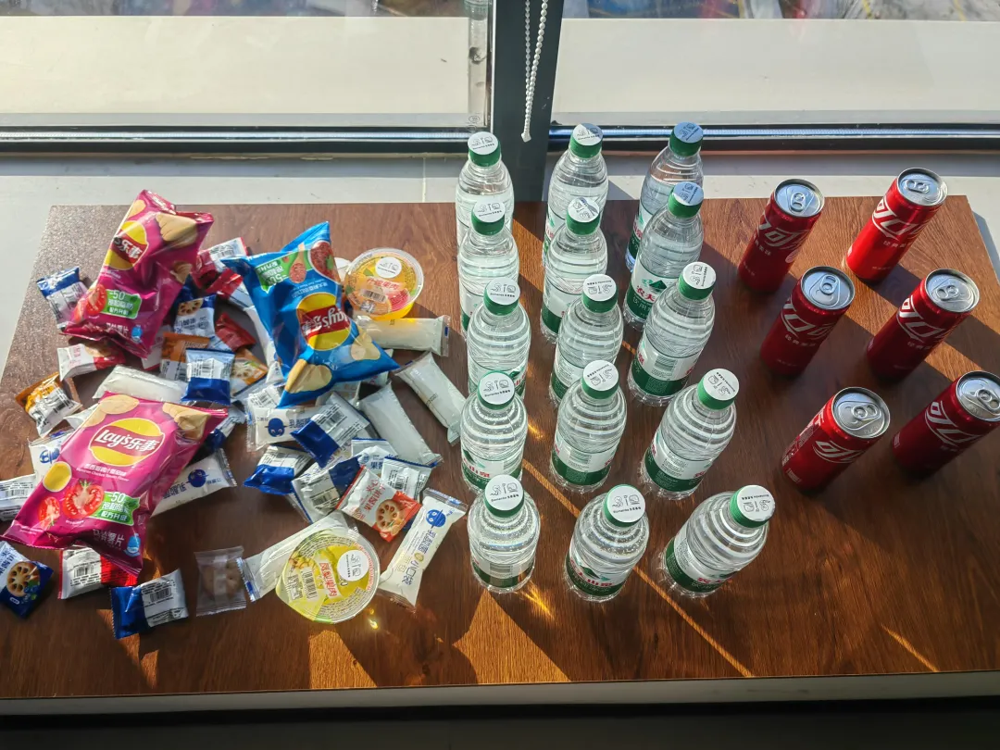

性价比超高的单细胞教程
原文：https://mp.weixin.qq.com/s?__biz=MzAwMzIzOTk5OQ==&mid=2247528394&idx=1&sn=65dd18e441d830cd1c92591fbcae8b1d&chksm=9b3c169aac4b9f8c8e3f8d2b0038d24a5bdbd88edbfcce1d196704082a37ffe5986354a3e08f#rd 合集：生信基地 / 漫谈胡侃

生信缺的从来就不是资料


以下对话来自用户的真实对话，对我们的《手把手教你做scRNA-seq数据基础分析》做出了高度评价，表示799￥的两天课程+长期答疑，性价比很高，已经到了不好意思还价的地步。其实还有性价比更高的，我们的视频在B站可以免费学
https://www.bilibili.com/video/BV1S44y1b76Z/
不过生信学习的困难从来不是缺少资料，大家如果需要有人手把手领着你学习单细胞数据基础分析，不妨考虑一下我们的课程。需要的加入的小伙伴得尽快啦，这周末就开课，现在已经需要提前熟悉5.5h入门R语言并开通学习版服务器。


手把手教你做scRNA-seq数据基础分析
离我们最开始做单细胞教程已经过去四五年，现在已经收获了40w+的阅读量。一共940min的教程相信足够大家完成单细胞的学习与文章发表，我们也陆陆续续收到小伙伴们的发文致谢：致谢合辑。 一方面随着时间飞逝，原先教学中的一些内容已然过时，毕竟我们最初的演示是基于Seurat V3，而现在V5上线都已经快两年了。另一方面很多同学由于缺少编程、单细胞、文章套路等基本知识，跟着视频并不能完全自学掌握单细胞分析技能。因此，基于最新的R环境与Seurat版本，我们重新组织、修订了《手把手教你做单细胞测序数据分析》课程。04月12日~13日在生信基地（线上/线下均可参与，错过直播也可以加入录播/答疑+循环开课）也希望真的能够做到“手把手”的带大家完成单细胞测序数据分析的学习，当然，我们拒绝生信快餐，课后欢迎大家随时在群里对课程内容提问~报名即送5.5h入门R语言回放与答疑服务。自学能力强的小伙伴也可以直接跟B站教程与我们的最新版学习手册scRNA-seq数据基础分析手册(2025最新修订)：
https://www.bilibili.com/video/BV1S44y1b76Z/
参与此次课程你将获得：1、单细胞数据分析教学指导与答疑2、开箱即用(我们已经布置好了环境)的单细胞分析环境：学习版上架啦~3、5.5h入门R语言回放、答疑群、讲义4、scRNA-seq基础分析手册、代码、测试文件
教程图片集锦：
一方面随着时间飞逝，原先教学中的一些内容已然过时，毕竟我们最初的演示是基于Seurat V3，而现在V5上线都已经快两年了。另一方面很多同学由于缺少编程、单细胞、文章套路等基本知识，跟着视频并不能完全自学掌握单细胞分析技能。因此，基于最新的R环境与Seurat版本，我们重新组织、修订了《手把手教你做单细胞测序数据分析》课程。04月12日~13日在生信基地（线上/线下均可参与，错过直播也可以加入录播/答疑+循环开课）也希望真的能够做到“手把手”的带大家完成单细胞测序数据分析的学习，当然，我们拒绝生信快餐，课后欢迎大家随时在群里对课程内容提问~报名即送5.5h入门R语言回放与答疑服务。自学能力强的小伙伴也可以直接跟B站教程与我们的最新版学习手册scRNA-seq数据基础分析手册(2025最新修订)：
https://www.bilibili.com/video/BV1S44y1b76Z/
参与此次课程你将获得：1、单细胞数据分析教学指导与答疑2、开箱即用(我们已经布置好了环境)的单细胞分析环境：学习版上架啦~3、5.5h入门R语言回放、答疑群、讲义4、scRNA-seq基础分析手册、代码、测试文件
教程图片集锦：
报名联系方式
已有生信基地联系方式的同学无需重复添加

课表


学习资料
同我们以前的课程一样，我们给大家准备了学习手册和学习资料，大家报名后可入群领取：


测试文件，总大小5.1GB：
├── GSE139107
│ ├── GSE139107_MouseIRI_12hours.dge.txt.gz
│ ├── GSE139107_MouseIRI_14days.dge.txt.gz
│ ├── GSE139107_MouseIRI_2days.dge.txt.gz
│ ├── GSE139107_MouseIRI_4hours.dge.txt.gz
│ ├── GSE139107_MouseIRI_6weeks.dge.txt.gz
│ └── GSE139107_MouseIRI_control.dge.txt.gz
├── GSE139107_MouseIRI.metadata.txt.gz
├── MonacoImmuneData.rds
├── bcell.marker.CSV
├── cg.rds
├── color.Rdata
├── data.txt
├── filtered_gene_bc_matrices
│ └── hg19
│ ├── barcodes.tsv
│ ├── genes.tsv
│ └── matrix.mtx
├── iri.intergrate.harmony.rds
├── iri.intergrate.harmony.rename.rds
├── iri.intergrate.havebatch.rds
├── iri.intergrate.havebatch.v5CCA.rds
├── iri.intergrate.rds
├── iri.obj4.rds
├── iri.obj5.rds
├── my.pbmc.tar.gz
├── mycount.txt
├── panc8.rds
├── pbmcrenamed.rds
└── single_cell_datamatrix.txt
3 directories, 27 files
报名费用
2天满满的课程（算上R语言就是四天课程啦）只要799￥，相信比小学生补课班还便宜。生信基地的任何业务均支持对公。
线下学习环境
地点 ：南京市江宁区，详细地址报名咨询**
往期活动现场： **
**
除了知识之外，现场还能够给大家提供：
茶水吧、咖啡机、零食柜
各类饮料、零食小吃

往期活动

如何联系我们

 留一个领取资料、免费两周学习版服务器的微信号[Biomamba_yunying]，方便各位随时交流。同时我们也构建了交流群矩阵，欢迎大家入群讨论。
留一个领取资料、免费两周学习版服务器的微信号[Biomamba_yunying]，方便各位随时交流。同时我们也构建了交流群矩阵，欢迎大家入群讨论。
大家可以阅读完这几篇之后添加给生信入门初学者的小贴士 如何搜索公众号过往发布内容
已有生信基地联系方式的同学无需重复添加
 您点的每个赞和在看，我都认真当成了喜欢
您点的每个赞和在看，我都认真当成了喜欢